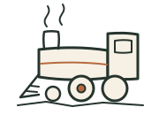
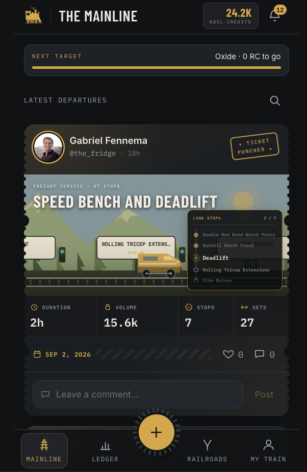
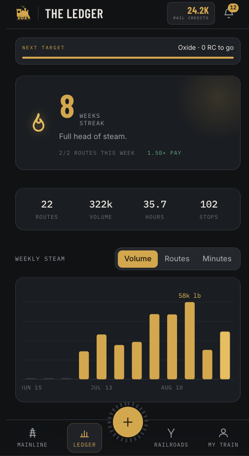
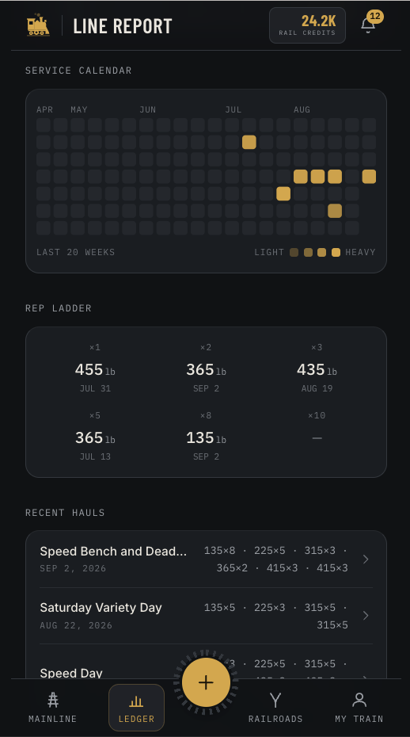
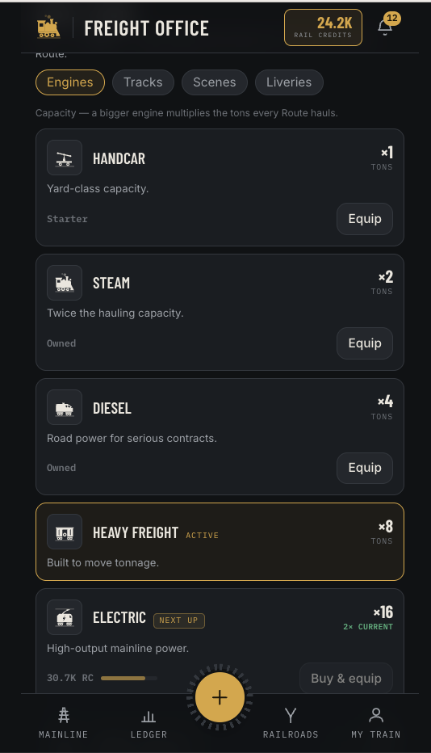
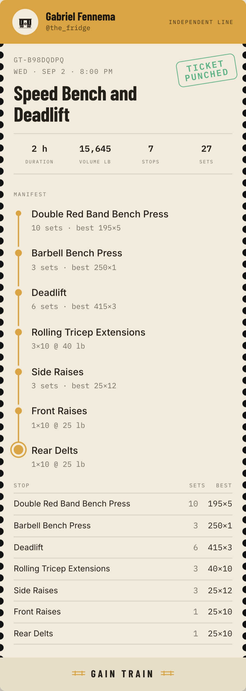

Gain Train
A lifting log that runs like a railroad. Every workout is a route, every exercise a stop, and finishing punches your ticket. Your crew rides along: their routes show up on the Mainline, and the credits you earn buy a bigger engine.
Works on your phone as an app. Open it in Safari or Chrome and add it to your home screen.

Why a train
Most workout apps are spreadsheets with a timer. They are accurate and nobody opens them on a day they don’t feel like lifting. Gain Train gives the same log a reason to come back: friends who see your departures, a streak with a name, a ticket you can post, and a train that gets bigger the more you haul. Strava meets Cookie Clicker, with a barbell.
What’s on board
Five screens, one metaphor. Pick one to see it.
Strava, for the barbell.
Every route you finish posts to the Mainline, where your friends see it, punch your ticket, and leave a comment. It is the social half of the app: your lifting out where your crew can react to it, and theirs where you can.

A streak with a name.
Weeks in a row, routes this week, and total volume, hours, and stops. The weekly chart flips between volume, routes, and minutes so you can see the shape of a training block.

One lift at a time.
Pick a lift and see its whole history: how often you have done it, your calculated one-rep max, the rep ladder of your bests at one through ten reps, and every route it showed up in.

Strava meets Cookie Clicker.
Routes pay rail credits. Credits buy engines that multiply what every route hauls, plus tracks, scenes, and liveries for your train. The game runs on top of the log and exists for one reason: to keep you feeding it.

Made to be shared.
Every route prints a ticket: the manifest of stops, sets, and bests on a card sized for a story or a post. Show people what you hauled without screenshotting a spreadsheet.

Getting on
- Open lift.gabefen.com on your phone.
- Add it to your home screen so it opens like an app.
- Create an account, log your first route, punch the ticket.
Built by Gabe Fennema for his own garage gym and the friends who lift in it. Questions or ideas: gmfennema@gmail.com.